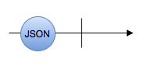

附加作用（副作用）
什么是函数的 附加作用？
如果一个函数除了计算返回值以外，还有其他可观测作用，我们就称这个函数拥有附加作用。
哪些是函数的 附加作用 ？
网络请求
如果一个函数发起了网络请求，那他就是有附加作用的。这个附加作用是获取或写入了函数本体以外的全局状态（数据库存储的状态可看作是全局状态）。
获取位置信息
如果一个函数获取了位置信息，那他就是有附加作用的。这个附加作用是获取了函数本体以外的位置信息（也可以看作是全局状态）。
获取 UI 状态
如果一个函数获取了 UI 状态，那他就是有附加作用的。这个附加作用是读取函数本体以外的 UI 状态（也可以看作是全局状态）。
其他类型的附加作用
以上，网络请求，定位和UI是比较常见的附加作用。以下也是附加作用：
- 读写全局变量
- 读写本地数据库
- 读写文件
- 使用蓝牙模块
- 打印输出
- ...
App 的 附加作用
有附加作用并不是什么坏事情。事实上，正是因为有了他，App 才更有价值。我们以几个常见 App 为例：
饿了么
饿了么是一个订餐 App，他最主要的 附加作用 是更新程序本体以外的状态。即：饿 -> 饱 （将我们从很饿变为很饱）。
抖音
抖音是一个影音娱乐 App，他最主要的 附加作用 是更新程序本体以外的状态。即：😐 -> 😁 （将我们变得更开心）。
滴滴
滴滴是一个叫车 App，他最主要的 附加作用 是更新程序本体以外的状态。即：🏠 -> 🏢（从起点到终点）。
Observable 中的 附加作用
在解释 Observable 中的 附加作用 之前，我们先要理解一个概念，即： Observable 其实是一个函数：
// 去除了不相关的范型约束，便于理解
func subscribe(_ observer: Observer) -> Disposable
你没有看错！以上 subscribe 函数就是 Observable。
换句话说 Observable 的 附加作用, 指的就是 subscribe 函数里面的 附加作用。
...
...
...
...
...
... 经过 60 秒后
示例：
之前在介绍 Observable 时，举了这样一个例子：

typealias JSON = Any
let json: Observable<JSON> = Observable.create { (observer) -> Disposable in
let task = URLSession.shared.dataTask(with: ...) { data, _, error in
guard error == nil else {
observer.onError(error!)
return
}
guard let data = data,
let jsonObject = try? JSONSerialization.jsonObject(with: data, options: .mutableLeaves)
else {
observer.onError(DataError.cantParseJSON)
return
}
observer.onNext(jsonObject)
observer.onCompleted()
}
task.resume()
return Disposables.create { task.cancel() }
}
这里的闭包 { (observer) -> Disposable in ... } 可以看作是 subscribe 函数，这个函数的附加作用就是发起网络请求去获取一个 JSON。所以 let json: Observable<JSON> 的 附加作用 也是发起网络请求去获取一个 JSON。
现在我们应该能够理解，什么是 Observable 的 附加作用 了。
为什么我喜欢称它为 附加作用，而不是 “副作用”？
首先澄清一下，我们这里所介绍的 附加作用， 就是大家平时说的 “副作用”。
最近听音乐时，不经意间切到了这一首歌：《爱的副作用》（这首歌可能你也听过）。
于是我就很好奇，这个 “副作用” 到底指的是 不好的作用，还是附加作用 🤔。从标题上看不出来，后来我看了下歌词：
...
但是我还是想不透
后来的我害怕什么
难道爱也有副作用
藏在血液里头
让我的心偶尔有点痛
...
我知道了，这里的 “副作用” 应该是 不好的作用。虽然解释成 附加作用 也说得通。但是 不好的作用 更符合语境。
那么这里就有个问题，“副作用” 是一个多义词。他既可以代表 不好的作用，也可以代表 附加作用。而且，在有些语境下这两种意义都说得通。我们便无法读出作者的本意。
在计算机领域也是一样的，虽然很多时候我们都知道 “副作用” 指的是 附加作用，但是用 不好的作用 也解释得通。这样就会产生歧义。
所以，我觉得如果有一个词，专门表示计算机领域的 “副作用” 会更好。如：附加作用。如此一来，读者不需要做多余的判断，就能解读作者的意图。